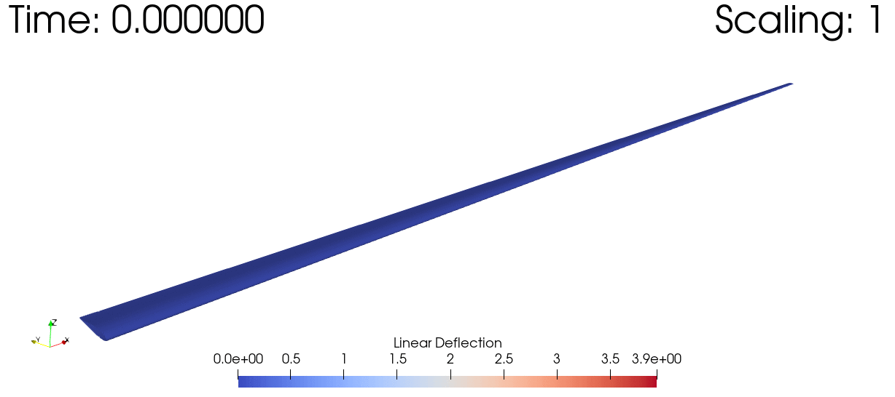

Using GXBeam with DifferentialEquations.jl
While the capabilities provided by GXBeam are probably sufficient for most users, advanced users may wish to make use of some of the features of the DifferentialEquations package. For this reason, we have created an interface in GXBeam to allow users to model the differential algebraic equations encountered in GXBeam in DifferentialEquations.
GXBeam to DifferentialEquations Interface Functions
The following constructors are available for modeling the differential algebraic equations from GXBeam in DifferentialEquations.
SciMLBase.DAEFunction — MethodDAEFunction(system::GXBeam.System, assembly)Construct a DAEFunction for the system of nonlinear beams contained in assembly which may be used with the DifferentialEquations package.
The parameters associated with the resulting DAEFunction are defined by the tuple (prescribed_conditions, distributed_loads, origin, linear_velocity, angular_velocity) where each parameter is defined as follows:
prescribed_conditions: A dictionary with keys corresponding to the points at which prescribed conditions are applied and elements of typePrescribedConditionswhich describe the prescribed conditions at those points. If time varying, this input may be provided as a function of time.distributed_loads: A dictionary with keys corresponding to the elements to which distributed loads are applied and elements of typeDistributedLoadswhich describe the distributed loads at those points. If time varying, this input may be provided as a function of time.origin: Global frame origin vector. If time varying, this input may be provided as a function of time.linear_velocity: Global frame linear velocity vector. If time varying, this vector may be provided as a function of time.angular_velocity: Global frame angular velocity vector. If time varying, this vector may be provided as a function of time.
SciMLBase.DAEProblem — MethodDAEProblem(system::GXBeam.System, assembly, tspan; kwargs...)Construct a DAEProblem for the system of nonlinear beams contained in assembly which may be used with the DifferentialEquations package.
A consistent set of initial conditions may be obtained prior to constructing the DAEProblem using initial_condition_analysis! or by constructing a DAEProblem after a time domain analysis.
Keyword Arguments:
prescribed_conditions = Dict{Int,PrescribedConditions{Float64}}(): A dictionary with keys corresponding to the points at which prescribed conditions are applied and elements of typePrescribedConditionswhich describe the prescribed conditions at those points. If time varying, this input may be provided as a function of time.distributed_loads = Dict{Int,DistributedLoads{Float64}}(): A dictionary with keys corresponding to the elements to which distributed loads are applied and elements of typeDistributedLoadswhich describe the distributed loads at those points. If time varying, this input may be provided as a function of time.origin = zeros(3): Global frame origin vector. If time varying, this input may be provided as a function of time.linear_velocity = zeros(3): Global frame linear velocity vector. If time varying, this vector may be provided as a function of time.angular_velocity = zeros(3): Global frame angular velocity vector. If time varying, this vector may be provided as a function of time.
Example Usage of GXBeam with DifferentialEquations
For this example we demonstrate how to solve the Nonlinear Dynamic Analysis of a Wind Turbine Blade problem using DifferentialEquations.
We start by setting up the problem as if we were solving the problem using GXBeam's internal solver.
using GXBeam, LinearAlgebra
L = 60 # m
# create points
nelem = 10
x = range(0, L, length=nelem+1)
y = zero(x)
z = zero(x)
points = [[x[i],y[i],z[i]] for i = 1:length(x)]
# index of endpoints of each beam element
start = 1:nelem
stop = 2:nelem+1
# stiffness matrix for each beam element
stiffness = fill(
[2.389e9 1.524e6 6.734e6 -3.382e7 -2.627e7 -4.736e8
1.524e6 4.334e8 -3.741e6 -2.935e5 1.527e7 3.835e5
6.734e6 -3.741e6 2.743e7 -4.592e5 -6.869e5 -4.742e6
-3.382e7 -2.935e5 -4.592e5 2.167e7 -6.279e5 1.430e6
-2.627e7 1.527e7 -6.869e5 -6.279e5 1.970e7 1.209e7
-4.736e8 3.835e5 -4.742e6 1.430e6 1.209e7 4.406e8],
nelem)
# mass matrix for each beam element
mass = fill(
[258.053 0.0 0.0 0.0 7.07839 -71.6871
0.0 258.053 0.0 -7.07839 0.0 0.0
0.0 0.0 258.053 71.6871 0.0 0.0
0.0 -7.07839 71.6871 48.59 0.0 0.0
7.07839 0.0 0.0 0.0 2.172 0.0
-71.6871 0.0 0.0 0.0 0.0 46.418],
nelem)
# create assembly of interconnected nonlinear beams
assembly = Assembly(points, start, stop; stiffness=stiffness, mass=mass)
# prescribed conditions
prescribed_conditions = (t) -> begin
Dict(
# fixed left side
1 => PrescribedConditions(ux=0, uy=0, uz=0, theta_x=0, theta_y=0, theta_z=0),
# force on right side
nelem+1 => PrescribedConditions(Fz = 1e5*sin(20*t))
)
endAt this point if we wanted to use GXBeam's internal solver, we would choose a time discretization and call the time_domain_analysis function.
# simulation time
t = 0:0.001:2.0
system, gxbeam_history, converged = time_domain_analysis(assembly, t;
prescribed_conditions = prescribed_conditions)To instead use the capabilities of the DifferentialEquations package we can do the following.
using DifferentialEquations
# define simulation time
tspan = (0.0, 2.0)
# run initial condition analysis to get consistent set of initial conditions
system, converged = initial_condition_analysis(assembly, tspan[1]; prescribed_conditions)
# construct DAEProblem
prob = DAEProblem(system, assembly, tspan; prescribed_conditions)
# solve DAEProblem
sol = solve(prob, DABDF2())We can extract the outputs from the solution in a easy to understand format using the AssemblyState constructor.
diffeq_history = [AssemblyState(system, assembly, sol[it]; prescribed_conditions)
for it in eachindex(sol)]Let's now compare the solutions from GXBeam's internal solver and the default DAE solver from DifferentialEquations.
using Plots
pyplot()
point = vcat(fill(nelem+1, 6), fill(1, 6))
field = [:u, :u, :u, :theta, :theta, :theta, :F, :F, :F, :M, :M, :M]
direction = [1, 2, 3, 1, 2, 3, 1, 2, 3, 1, 2, 3]
ylabel = ["\$u_x\$ (\$m\$)", "\$u_y\$ (\$m\$)", "\$u_z\$ (\$m\$)",
"Rodriguez Parameter \$\\theta_x\$ (degree)",
"Rodriguez Parameter \$\\theta_y\$ (degree)",
"Rodriguez Parameter \$\\theta_z\$ (degree)",
"\$F_x\$ (\$N\$)", "\$F_y\$ (\$N\$)", "\$F_z\$ (\$N\$)",
"\$M_x\$ (\$Nm\$)", "\$M_y\$ (\$Nm\$)", "\$M_z\$ (\$N\$)"]
for i = 1:12
plot(
xlim = (0, 2.0),
xticks = 0:0.5:2.0,
xlabel = "Time (s)",
ylabel = ylabel[i],
grid = false,
overwrite_figure=false
)
y_gxbeam = [getproperty(state.points[point[i]], field[i])[direction[i]]
for state in gxbeam_history]
y_diffeq = [getproperty(state.points[point[i]], field[i])[direction[i]]
for state in diffeq_history]
if field[i] == :theta
# convert to Rodriguez parameter
@. y_gxbeam = 4*atan(y_gxbeam/4)
@. y_diffeq = 4*atan(y_diffeq/4)
# convert to degrees
@. y_gxbeam = rad2deg(y_gxbeam)
@. y_diffeq = rad2deg(y_diffeq)
end
if field[i] == :F || field[i] == :M
y_gxbeam = -y_gxbeam
y_diffeq = -y_diffeq
end
plot!(t, y_gxbeam, label="GXBeam")
plot!(sol.t, y_diffeq, label="DifferentialEquations")
plot!(show=true)
end[ Info: Installing matplotlib via the Conda matplotlib package...
[ Info: Running `conda install -q -y matplotlib` in root environment
Collecting package metadata (current_repodata.json): ...working... done
Solving environment: ...working... done
## Package Plan ##
environment location: /home/runner/.julia/conda/3
added / updated specs:
- matplotlib
The following packages will be downloaded:
package | build
---------------------------|-----------------
cycler-0.10.0 | py38_0 14 KB
dbus-1.13.18 | hb2f20db_0 504 KB
expat-2.3.0 | h2531618_2 158 KB
fontconfig-2.13.1 | h6c09931_0 250 KB
freetype-2.10.4 | h5ab3b9f_0 596 KB
glib-2.68.1 | h36276a3_0 3.0 MB
gst-plugins-base-1.14.0 | h8213a91_2 4.9 MB
gstreamer-1.14.0 | h28cd5cc_2 3.2 MB
icu-58.2 | he6710b0_3 10.5 MB
jpeg-9b | h024ee3a_2 214 KB
kiwisolver-1.3.1 | py38h2531618_0 80 KB
lcms2-2.12 | h3be6417_0 312 KB
libpng-1.6.37 | hbc83047_0 278 KB
libtiff-4.1.0 | h2733197_1 449 KB
libuuid-1.0.3 | h1bed415_2 15 KB
libxcb-1.14 | h7b6447c_0 505 KB
libxml2-2.9.10 | hb55368b_3 1.2 MB
lz4-c-1.9.3 | h2531618_0 186 KB
matplotlib-3.3.4 | py38h06a4308_0 26 KB
matplotlib-base-3.3.4 | py38h62a2d02_0 5.1 MB
olefile-0.46 | py_0 33 KB
pcre-8.44 | he6710b0_0 212 KB
pillow-8.2.0 | py38he98fc37_0 628 KB
pyparsing-2.4.7 | pyhd3eb1b0_0 59 KB
pyqt-5.9.2 | py38h05f1152_4 4.5 MB
python-dateutil-2.8.1 | pyhd3eb1b0_0 221 KB
qt-5.9.7 | h5867ecd_1 68.5 MB
sip-4.19.13 | py38he6710b0_0 277 KB
tornado-6.1 | py38h27cfd23_0 588 KB
zstd-1.4.9 | haebb681_0 480 KB
------------------------------------------------------------
Total: 106.8 MB
The following NEW packages will be INSTALLED:
cycler pkgs/main/linux-64::cycler-0.10.0-py38_0
dbus pkgs/main/linux-64::dbus-1.13.18-hb2f20db_0
expat pkgs/main/linux-64::expat-2.3.0-h2531618_2
fontconfig pkgs/main/linux-64::fontconfig-2.13.1-h6c09931_0
freetype pkgs/main/linux-64::freetype-2.10.4-h5ab3b9f_0
glib pkgs/main/linux-64::glib-2.68.1-h36276a3_0
gst-plugins-base pkgs/main/linux-64::gst-plugins-base-1.14.0-h8213a91_2
gstreamer pkgs/main/linux-64::gstreamer-1.14.0-h28cd5cc_2
icu pkgs/main/linux-64::icu-58.2-he6710b0_3
jpeg pkgs/main/linux-64::jpeg-9b-h024ee3a_2
kiwisolver pkgs/main/linux-64::kiwisolver-1.3.1-py38h2531618_0
lcms2 pkgs/main/linux-64::lcms2-2.12-h3be6417_0
libpng pkgs/main/linux-64::libpng-1.6.37-hbc83047_0
libtiff pkgs/main/linux-64::libtiff-4.1.0-h2733197_1
libuuid pkgs/main/linux-64::libuuid-1.0.3-h1bed415_2
libxcb pkgs/main/linux-64::libxcb-1.14-h7b6447c_0
libxml2 pkgs/main/linux-64::libxml2-2.9.10-hb55368b_3
lz4-c pkgs/main/linux-64::lz4-c-1.9.3-h2531618_0
matplotlib pkgs/main/linux-64::matplotlib-3.3.4-py38h06a4308_0
matplotlib-base pkgs/main/linux-64::matplotlib-base-3.3.4-py38h62a2d02_0
olefile pkgs/main/noarch::olefile-0.46-py_0
pcre pkgs/main/linux-64::pcre-8.44-he6710b0_0
pillow pkgs/main/linux-64::pillow-8.2.0-py38he98fc37_0
pyparsing pkgs/main/noarch::pyparsing-2.4.7-pyhd3eb1b0_0
pyqt pkgs/main/linux-64::pyqt-5.9.2-py38h05f1152_4
python-dateutil pkgs/main/noarch::python-dateutil-2.8.1-pyhd3eb1b0_0
qt pkgs/main/linux-64::qt-5.9.7-h5867ecd_1
sip pkgs/main/linux-64::sip-4.19.13-py38he6710b0_0
tornado pkgs/main/linux-64::tornado-6.1-py38h27cfd23_0
zstd pkgs/main/linux-64::zstd-1.4.9-haebb681_0
Preparing transaction: ...working... done
Verifying transaction: ...working... done
Executing transaction: ...working... done


The solutions provided by GXBeam and DifferentialEquations track closely with each other at first, then drift further apart as the dynamics become more and more chaotic.
write_vtk("dynamic-wind-turbine", assembly, gxbeam_history, sol.t)